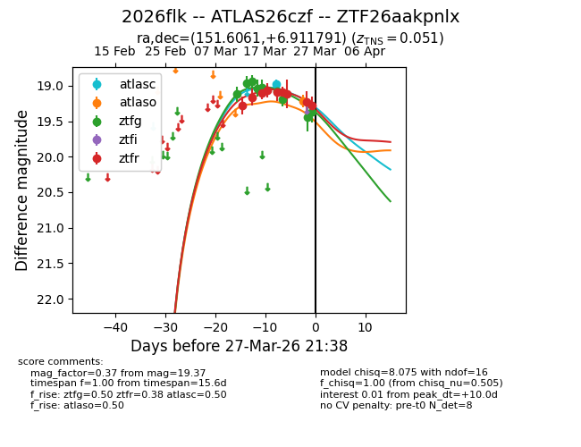
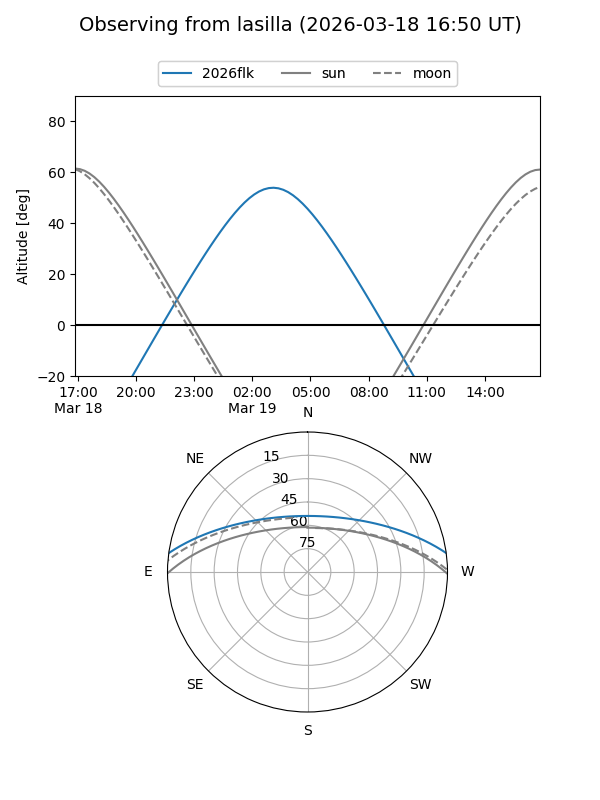
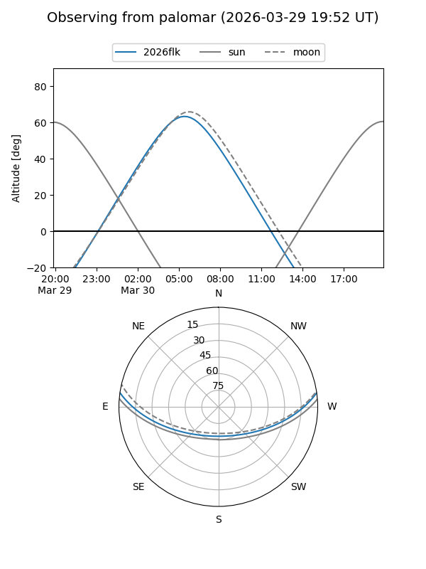
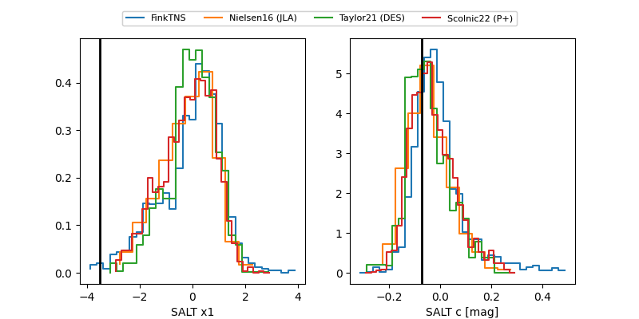

2026flk
Target 2026flk at 2026-03-27 21:41
Aliases and brokers:
FINK: link
Lasair: link
ALeRCE: link
TNS: link
YSE: link
alt names
ZTF26aakpnlx (ztf,fink_ztf)
2026flk (tns,yse)
ATLAS26czf (atlas)
Coordinates:
equatorial (ra, dec) = 151.6061,+6.91179
equatorial (HMS+DMS) = 10:06:25.46,+06:54:42.45
galactic (l, b) = (232.5415,+45.98063)
Flags:
Photometry:
last atlasc=18.98, atlaso=19.22, ztfg=19.37, ztfr=19.28
1 atlasc, 1 atlaso, 9 ztfg, 9 ztfr detections
Lightcurve

Visibility


Additional plots
